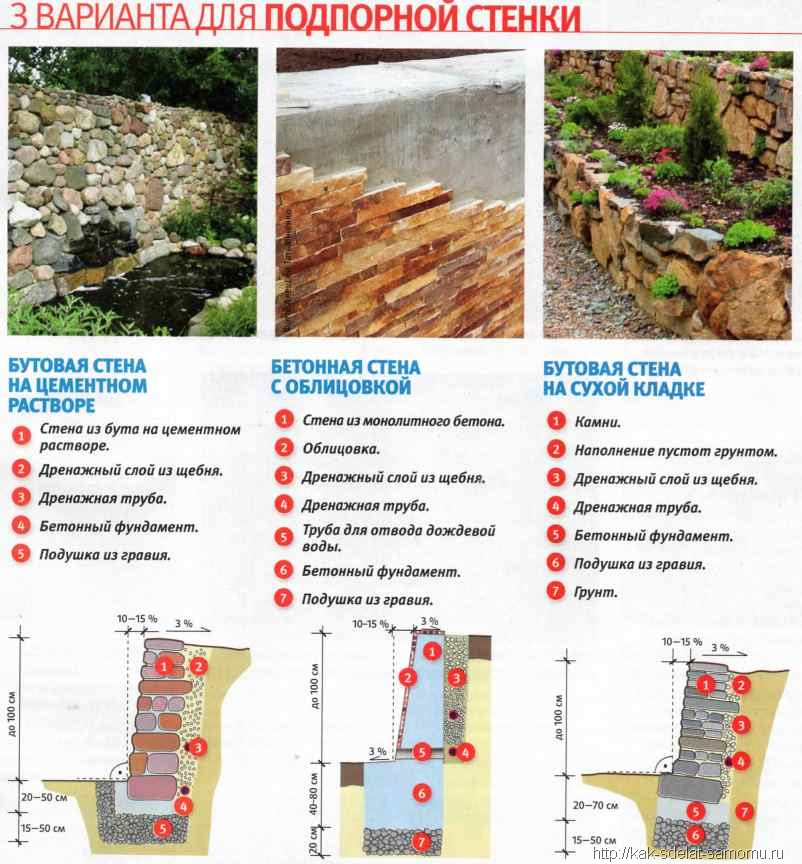

Підпірна стінка, можна здогадатися по назві, являє собою кам'яну стіну, побудовану впритул до природного схилу або ґрунтового насипу. Спочатку підпірні стінки будувались з чисто практичних міркувань. По-перше, щоб попередити зсув ґрунту і каміння на схилах. По-друге, для створення на гірському рельєфі “каскадних” майданчиків, зручних для посадки сільськогосподарських культур і будівництва житла. Але виявилось, що підпірні стінки гарні і самі по собі, навіть, якщо не виконують ні одну з перелічених функцій. Особливо, якщо в щілинах між камінням висаджені декоративні рослини.
Влаштування підпірних стінок - найкраще рішення при наявності крутого схилу. Тим паче, що підпірна стінка - один з найбільш ефектних прийомів ландшафтного дизайну. Вона може бути традиційно односторонньою, коли задня поверхня спирається на схил, або двосторонньою, з рослинами і без них, високою або низькою. Зазвичай підпірна стінка будується не як самостійний квітник, а в якості домінуючої складової складного рокарію. Її часто використовують для створення високої клумби, терасованого рокарію, щоб відокремити одну частину від іншої, і в інших квітниках зі складними багаторівневими композиціями. Двосторонні підпірні стінки можуть бути й декоративними городами.
В залежності від загального стильового рішення садиби і саду підпірні стінки і їх елементи можуть бути виконані із різних матеріалів і принципово різноманітними способами. Частіше всього використовується натуральне каміння прямокутної форми, монолітні блоки, цегла і навіть дерево.
З не меншим успіхом може використовуватись метал, кераміка, габіонні блоки з будь - якими (в залежності від значення стінки) наповнювачами, блоки зі скла й інші незвичні матеріали. По способу влаштування стінки, як правило, можна поділити на три види: несуча стіна з бетону (частіше всього потребує лицювання), стінка із визначеного матеріалу, викладена сухою кладкою, і стінка, влаштована на цементному розчині (наприклад, камінь, цегла, бетонні блоки).
Порада:
У всіх цих випадках необхідно дотримуватися одного із головних правил - дренаж. Забувати про нього в ландшафтному благоустрої неможна.
Для більш високих підпірних конструкцій обов'язково потребується фундамент. Товщина (заглиблення) фундаменту залежить від висоти стін фундаменту і її ваги. Для серйозних випадків по всій лінії фундаменту закладається арматурний пояс, що заливається шаром бетону. Вид профільного розрізу підпірної стінки залежить від способу її влаштування і знову ж від дизайнерського задуму. А дуже високі стіни мають невеликий нахил в сторону підпираючого грунту. Звісно, бувають й інші випадки, коли стінки повинні бути суто вертикальними. Фронтальна лінія підпірної стінки може бути ломаною, криволінійною, східчатою або прямокутною, та тільки акуратність і сумлінність - вагома особливість будівельника - надасть можливість отримати її належний зовнішній вигляд і функціональну надійність.